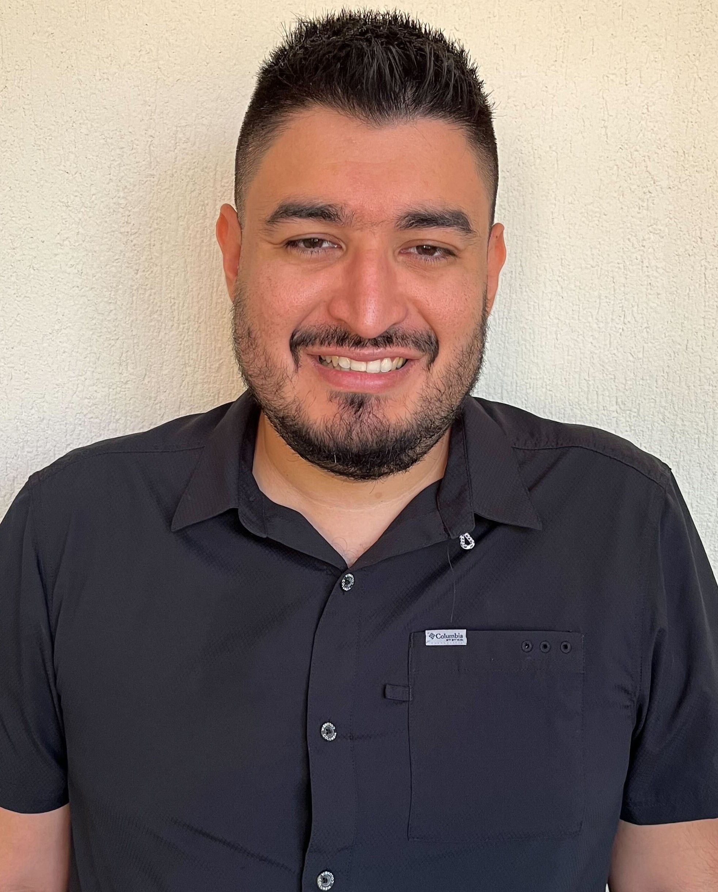

Fernando Martinez

Contact Me
Summary
I am a software engineer with 15 years of experience in software development and consulting.
My enthusiasm for technology motivates me to continuously innovate. I strongly believe that technology can offer effective solutions to current challenges.
Over the course of my career, I've held diverse roles, including QA and developer to consultant and team leader.
This varied trajectory has provided me with a comprehensive understanding of the software development life cycle.
I've learned that goal clarity is essential in any project, and my approach focuses on establishing clear objectives to achieve successful outcomes.
Work Experience
- Co Founder - Lighthouse
July 2023 - Present
Achievements:
- Business Strategy Development
- Business Development
- Lead Generation
- Customer Retention
- Development Team Leader
- Salesforce Developer - Parquet Development
September 2022 - Present
Achievements:
- Flow builder, validation rule, process builder, workflow, and approval process.
- Build solutions with Apex (Class and Triggers).
- Create Lightning Web Components.
- Work with Salesforce CPQ.
- Work with Sales Cloud.
- Data analyst for Salesforce.
- Agile Methodology.
- Software Developer and Consultant Freelancer
January 2022 - June 2023
Achievements:
- Implementation of Microsoft Dynamics NAV.
- Implementation of Microsoft Dynamics Business Central.
- Implementation of Microsoft Dynamics 365 Business Central.
- Microsoft Dynamics NAV implementation support.
- Microsoft Dynamics Business Central implementation support.
- Microsoft Dynamics 365 Business Central implementation support.
- Post Go Live support for Microsoft Dynamics NAV.
- Post Go Live support for Microsoft Dynamics Business Central.
- Post Go Live support for Microsoft Dynamics 365 Business Central.
- Development of New Features in C/AL for Microsoft Dynamics NAV
- Development of New Features in AL for Microsoft Dynamics Business Central
- Development of New Features in AL for Microsoft Dynamics 365 Business Central
- Coordination of activities to be carried out within the project.
- Training for Microsoft Dynamics NAV tool.
- Development of interfaces between systems with databases (Sybase, MySQL, SQL Server)
- Project Managment
- Implementation and Advisory of Agile Methodologies
- Technical Consulting for New Developments and Applications with Clients
- Data Analyst - Fusionspan
January 2022 - August 2022
Achievements:
- Analysis of different data warehouses.
- Extract, transform and load (ETL) to different data warehouses.
- Creation of reports for validation of data warehouses.
- Data load for Go Live.
- Microsoft Dynamics Senior Consultant - IDS de Centroamerica
December 2011 - December 2021
Achievements:
- Implementation of Microsoft Dynamics NAV.
- Microsoft Dynamics NAV implementation support.
- Post Go Live support for Microsoft Dynamics NAV.
- Coordination of activities to be carried out within the project.
- Training for Microsoft Dynamics NAV tool.
- Development of interfaces between systems with databases (Sybase, MySQL, SQL Server)
- Implementation of modules for accounting, purchasing, sales, CRM, Manufacturing, Projects, Warehouse, Advanced warehouse, Manufacturing to Increase, Payroll and Human Resources.
- Implementation of solutions for 3PL, sugar distribution El Salvador, sugar manufacturing, hospital charges, electronic product catalog.
- Analysis of new requirements and transformation of information for business intelligence.
- Development of reports in Jet Reports.
- Dashboard development in Power Bi.
- Development of reports in NAV.
- Development of Jet Data Manager information cubes.
- Support in the pre-sale process and System tester.
Career
- Computer Systems and Networks Engineering Technician
Instituto Tecnológico Centroamericano (ITCA) - 2008
- Technical bachelor's degree in electronics
Colegio Salesiano Santa Cecilia - 2005
Skills
- Discipline and organization.
- Results and goals oriented.
- People management, leadership, and team building.
- Continuous improvement and change management.
- Problem solving.
- Perseverance and determination.
- Communication.
- Stakeholder management.
- Planning and resource management.
Certifications
- Microsoft Technology Specialist
- Salesforce Certified Administrator
- The Complete 2023 Web Development Bootcamp - in progress
Knowledge
- Apex Class
- Apex Triggers
- Lightning Web Components
- Flow Builder
- Python Basis
- JavaScript Basis
- Transact-SQL for SQL Server
- Development in C/AL programming language Dynamics NAV
- MySQL
- Transact-SQL for Sybase
- Dynamics NAV 2009, 2013, 2015, 2016, 2017, 2018, Business Central, Business Central 365
- Manufacturing To - Increase
- Payroll Serenic
- Serenic Human Resources
- Excel
- Power Bi
- Jet Reports
Language
- Spanish - Native
- English - B1